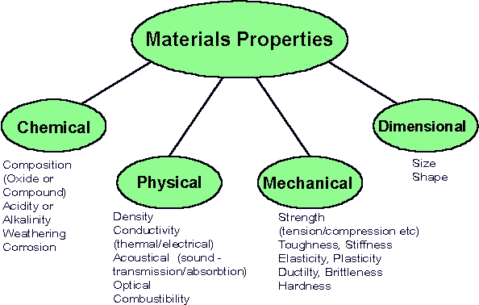
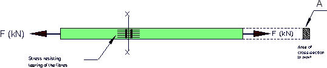
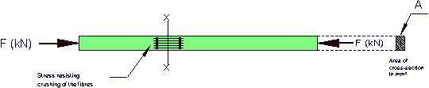
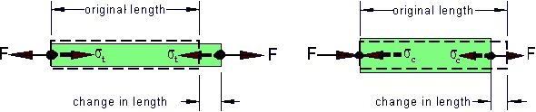
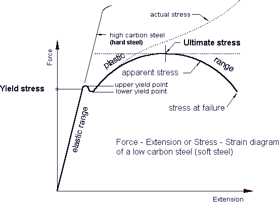
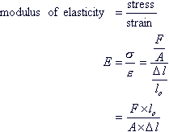

 To consider the behaviour of the commoner building materials under load, we should be able to define their mechanical properties. These properties include Strength, Elasticity, Ductility, Malleability, Plasticity, Brittleness, Toughness, and Hardness. It is in terms of one or more of these that the suitability of a material for any specific purpose must be judged, and in order to realise the meaning of test results we must understand how, and to what extent, they indicate the various properties. Strength. The strength of a member or structure is the resistance it is able to offer to the load, which will just cause fracture. The strength of a material is the resistance which e.g. 1 mm² of section can offer to the load whitout fracturing. This breaking strength is also referred to as ultimate strength, by which is meant the strength when it reaches the last or ultimate stage of breaking, which in ductile materials occurs when the " waist " begins to form. The ultimate strength value is defined as the nominal stress at the point of maximum loading on the basis of original cross-section and not the actual or reduced area (see graph below). In other connections, such as safe strength, working strength, yield point strength, elastic limit strength, the word indicates the resistance offered by the material under the conditions implied, usually in the form of strength per mm² of section, or stress, for comparative purposes (Usually measured in MPa). Elasticity. Elasticity is the property by which a material is enabled to return exactly to its original shape on removal of a straining force, a very important property in engineering materials. It is measured by, (i) the Elastic Limit Stress, (ii) the Modulus of Elasticity. These two values show how great a stress may be applied to the material before permanent distortion results, and by how much a member made of the material will distort under a given load-knowledge which is of the utmost value in the design of all types of structures. Ductility. Ductility is the property which enables a material to be drawn out in the direction of its length -that is, converted into wire. It is a valuable property, because a ductile material will not fail suddenly, or snap off short in service without giving adequate warning by elongation. (In an ewarthquake area structures need to be designed for ductility). Malleability. Malleability enables a material to be hammered or otherwise worked into various shapes, and is a somewhat similar property to ductility. It may be considered as " mass ductility ", since it is not confined to one direction, but permits the whole mass of the material to be altered in shape without fracture. Familiar processes made possible by this property are forging, drop-stamping, and hot rolling, etc. Plasticity. Plasticity is the reverse of elasticity; a plastic material will retain exactly the shape it assumes under load when the load is removed. Familiar examples are the stamping of images on coins and the multiplicity of domestic and ornamental objects produced by pressing synthetic resins and similar compounds in steam-heated dies. Plasticity is fairly similar to ductility. Brittleness. Brittleness is the property, which causes a material to break or snap off short without any sensible elongation, and is the reverse of ductility. It is obviously a most undesirable property in materials, as brittle materials give no warning of approaching failure. Brittleness is often induced by fatigue, which results from the application of varying and repeated stresses or stress reversal. Toughness. Toughness may be defined as the resistance of a material, after its yield point has been passed, to fracture by repeated bending or twisting. There are several tests for this property, such as observing the number of times a bar of the material will twist axially prior to fracture, or the number of repeated bending it can be subjected to. Another is the bend test under which a specimen should be capable of being bent through a specified angle and show no sign of fracture (bending of reinforcement).Resistance to impact. The resistance offered by a specimen of the material to fracture by the impact of a moving body, is considered a measure of the toughness. Hardness. The term Hardness is usually defined as the degree of resistance to indentation by a standard steel ball, or by a pyramidal diamond. It is also used to refer to the resistance to scratching, or to the ability to indent or cut other materials, as in the case of tools. (Tis property is important for floor and wall surfaces.) [ top of page ] Stress - Strain Stresses and strains will be set up in any material that is subjected to an external load.
The unit of stress is pascal (Pa), and multiples of the pascal i.e. kilopascal (kPa), megapascal (MPa) and the gigapascal (GPa). Tensile stress The steel bar shown below has a cross section area A (mm²) and is pulled out at each end by forces F. (Note that the total force in the member is F kN not 2F kN. At the plane x-x there exists a state of stress between the fibres on one side of plane x-x and those on the other.  This stress is evenly distributed over the cross-section and set up along the whole length of the bar and not in plane x-x only, just as in a chain resisting forces are set up by every link. Each square millimeter of cross-section provides the same resistance to the pulling apart tendency Compressive stress Compressive stress is similar to the tension stress but the forces acting towards each other putting the bar in compression. Here the cross section is resisting the tendency of the fibres to be crushed. 
Robert Hooke (1635-1703) found that stress is proportional to strain, provided the elastic limit of the material is not exceeded. The ratio of stress to strain is a constant and characteristic of the material within the elastic limit. This ratio is known as modulus of elasticity (E) or Young’s modulus. E is a measure of the stiffness of the material. The unit of the modulus of elasticity is the gigapascal (Gpa). Elasticity All material bodies will deform. As the stress increased the deformation also increases and if the load on the material is removed at any stage up to the elastic limit it will return to its original shape and dimension (original length).  Conventionally tensile stresses are considered positive (+) and compressive stresses negative (-) [ top of page ] In a tensile test a graph is produced of stress against strain as the load is gradually applied. The first portion of the graph will be a straight line as shown below.  The slope of this straight line is the constant of proportionality known as the Modulus of elasticity also called Young’s modulus. The formuar below shows the calculations of the modulus of elasticity (refer to examples below.
[ top of page ]
Example 2 Determine the increase in length of a steel rod four (4) metre long and 20 mm diameter when subjected to a tensile load of 85 kN. (E = 200 Gpa)Solution
|